Grupo de Utilizadores QGIS PT
Apresentação e Objectivos
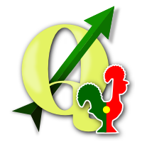Quem somos e como nasceu o grupo
- Geogeeks
- Apaixonados pelo mundo dos SIG
- Apaixonados pelo modelo e filosofia Open Source
- 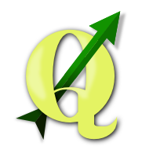
Quem somos e como nasceu o grupo
“ As funcionalidades do QGIS são cada vez maiores e mais estáveis ”
“ O QGIS está a tornar-se o SIG Desktop Standard ”
“ O número de utilizadores QGIS não pára de crescer ”
Quem somos e como nasceu o grupo
Fazia falta um espaço de língua Portuguesa inteira e unicamente dedicado ao QGIS
E eis que em Março de 2014 surge...
Quem somos e como nasceu o grupo
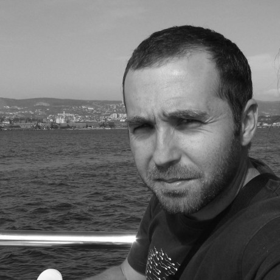 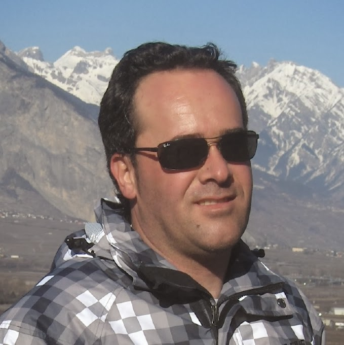Alexandre - Giovanni - Nelson
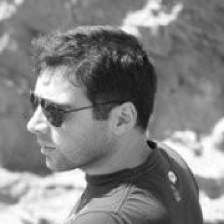Pedro - Hugo
Quem somos e como nasceu o grupo
LOST IN TRANSLATION
| 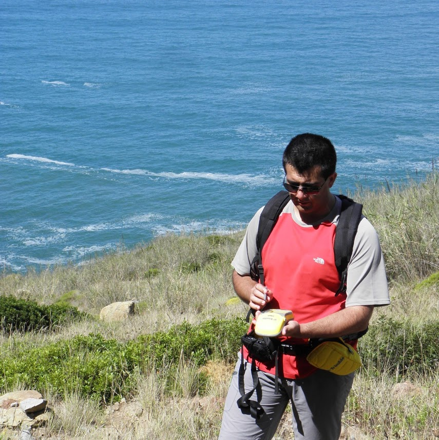 |  |
| André Mano | João Gaspar |
Objectivos
- Promover a utilização de QGIS
- Organização de eventos
- Promover a filosofia Open Source
- Angariação de fundos
- Promover e coordenar a tradução para pt-PT
- Promover/patrocionar teste de novas versões e bug fixing
- Promover o desenvolvimento de código upstream
- Promover o desenvolvimento de uma comunidade local
- Totalmente aberta e sem hierarquias
- Partilha de casos de estudo
- Partilha de modelos de processamento
- Desenvolvimento de simbologia
Finalidade
Construir uma comunidade saudável, transparente e activa
feita por Utilizadores para Utilizadores
Portanto
Estado Actual do grupo
- Presença na Internet
- Mailing list
- Site
- Blog
- Redes Sociais (Facebook, Google +, Twitter, YouTube)
- Social Coding (GitHub)
- Estatísticas
- +140 inscritos na mailing list
- +500 likes no Facebook
- 26 seguidores e 1480 visualizações no Google +
- 33 seguidores no Twitter
- 3 contribuidores no GitHub
Estado Actual do grupo
Estatísticas do Site
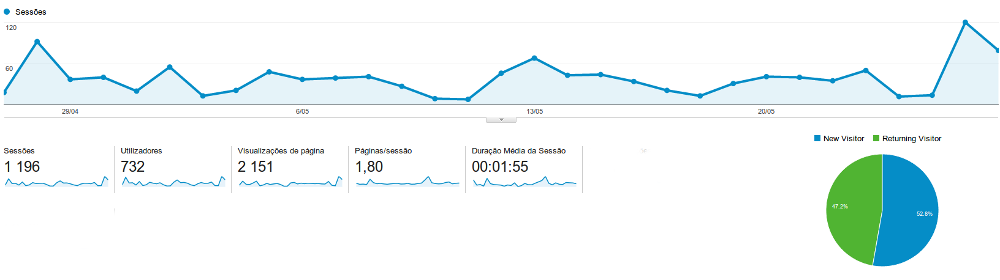Estado Actual do grupo
Estatísticas do Site
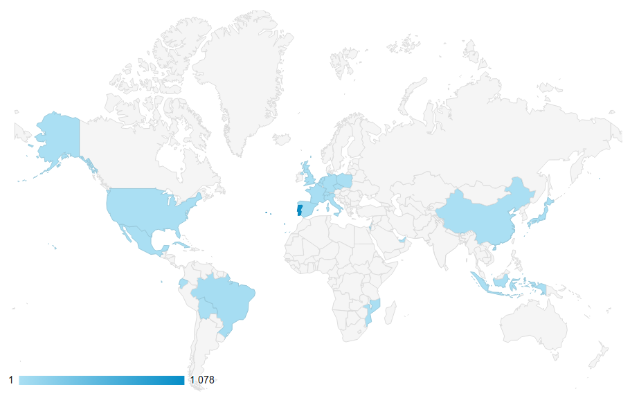Estado Actual do grupo
Estatísticas do Site
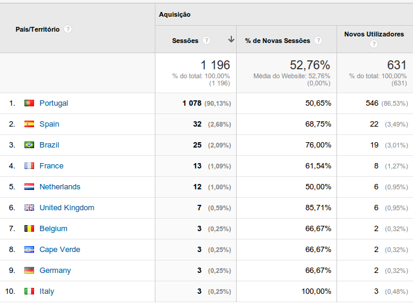ROADMAP
1. Focar esforços na tradução
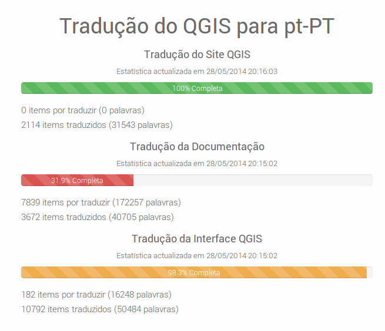ROADMAP
- Tornar a participação na lista mais activa
- Fomentar a publicação de artigos no Blog
- Finalizar o desenvolvimento do site
- Casos de estudo
- Serviços OGC com QGIS Server
- Lista de recursos de dados abertos
- MAIS IDEIAS/SUGESTÕES ???
ROADMAP
- Desenvolvimento de plugins de interesse para a comunidade local
- Listagem e carregamento de camadas disponibilizadas por GeoWebServices abertos (www.igeo.pt)
- MAIS IDEIAS/SUGESTÕES ???
ROADMAP
- Participar no próximo Hackfest do QGIS, 2 de Outubro 2014, Essen, Alemanha (Site oficial do Hackfest)
QGIS Hackfest
What a cool place!!!
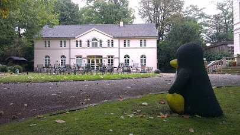
QGIS Hackfest
Geogeeks in action!!!
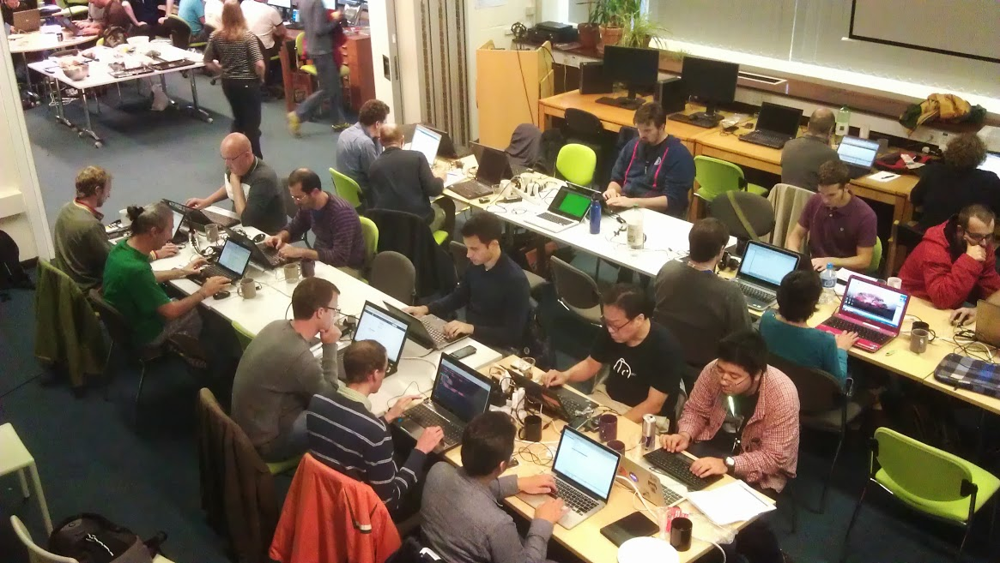QGIS Hackfest
Geogeeks in action!!!
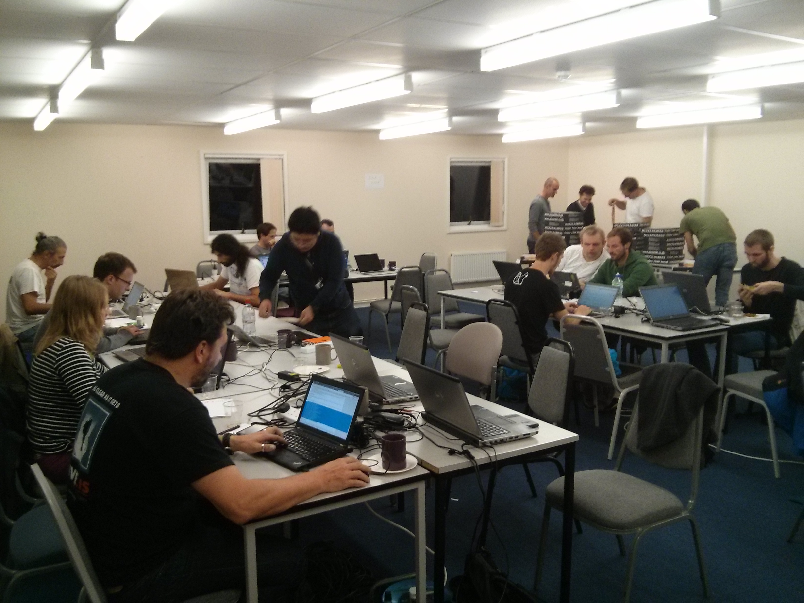QGIS Hackfest
Geogeeks in action!!!
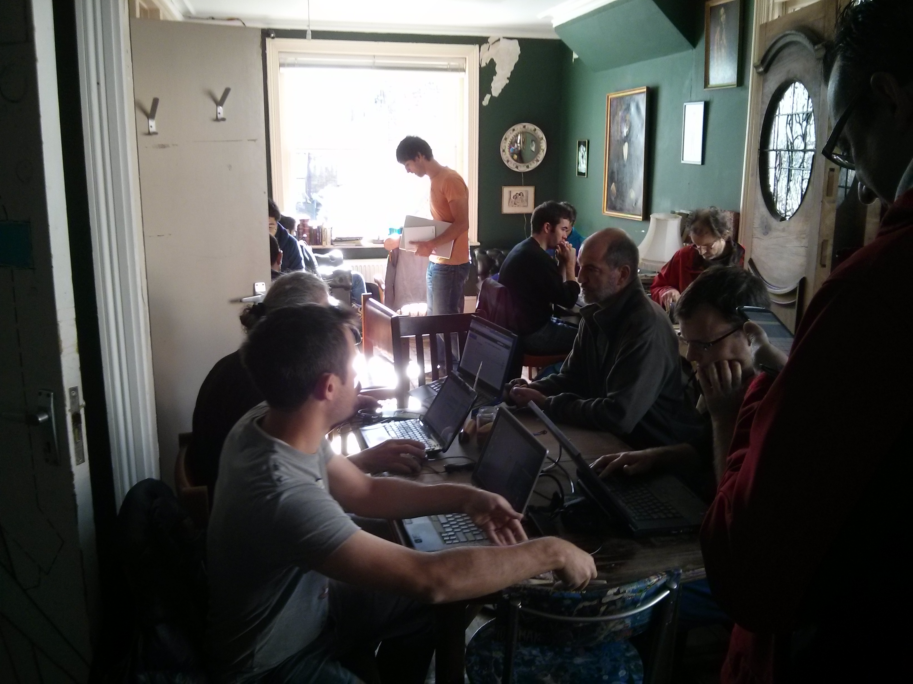QGIS Hackfest
Geogeeks in action!!!
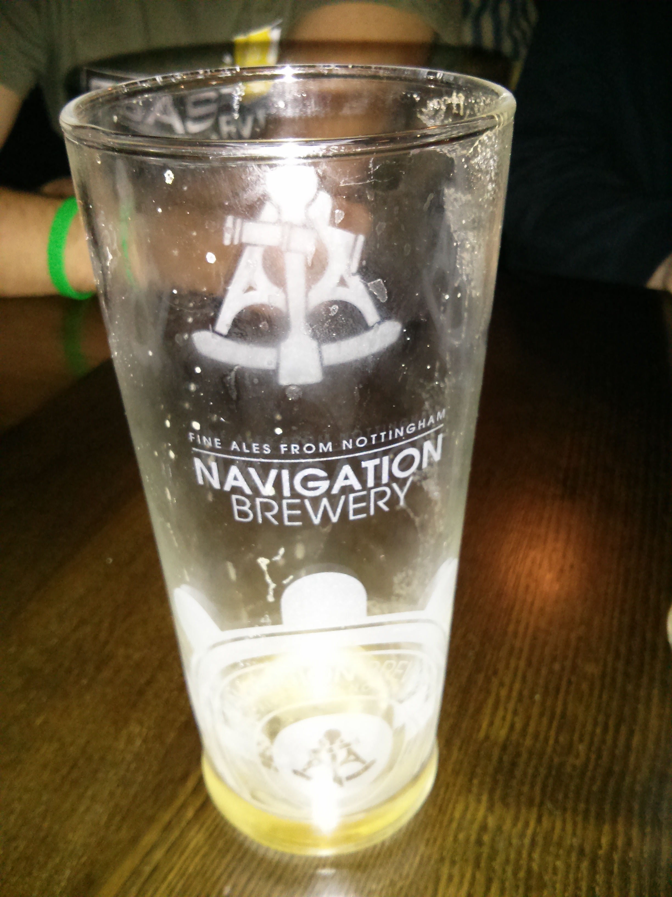QGIS Hackfest
Geogeeks in action!!!
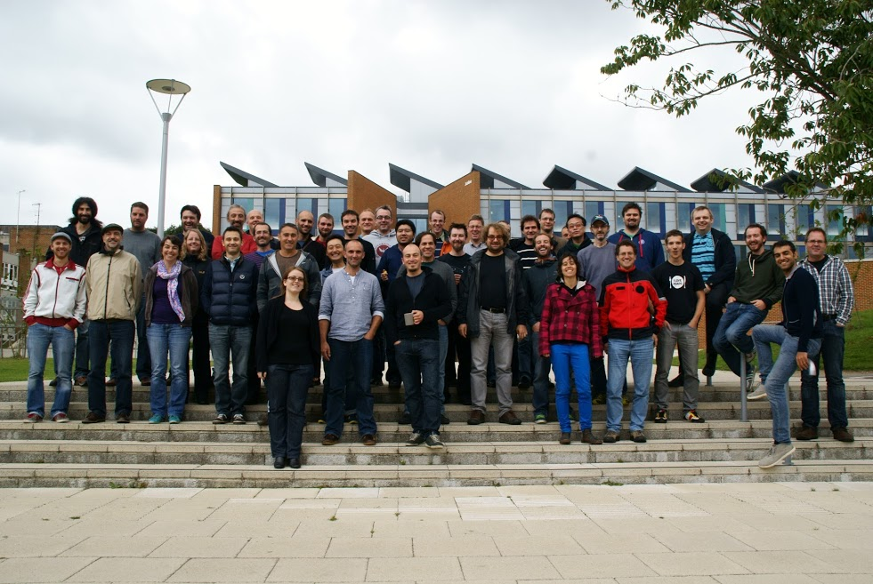